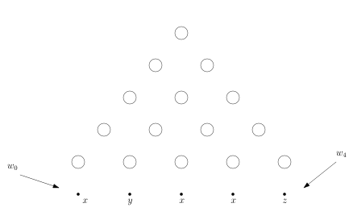
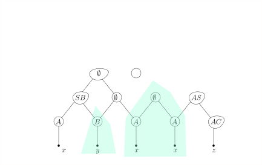
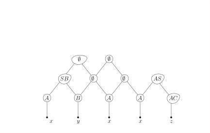
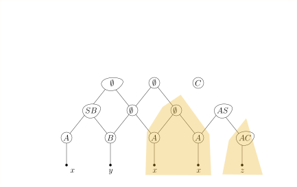
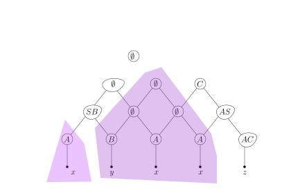
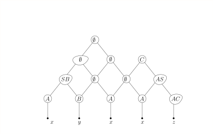
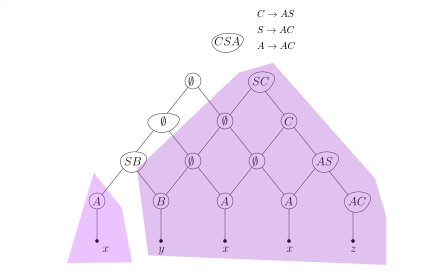
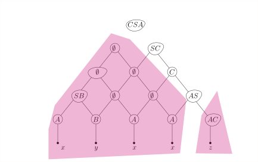
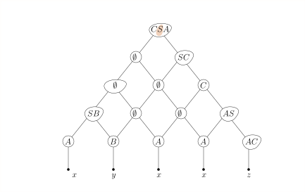
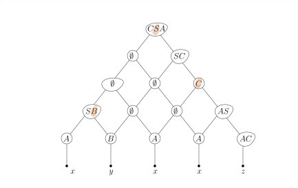

import Section from "~/components/Section";
import Paragraph from "~/components/Paragraph";
import Container from "~/components/Container";
import Carousel from "~/components/Carousel";
import NumberedTitle from "~/components/NumberedTitle";
const Article = () => {
  return (
    <Container>
      <Section
        count={38}
        title_gr="Allgemeine kontextfreie Sprachen parsen"
        title_en="general parsing"
        number={5.10}
        counter="DefCtr"
        counter="ExoCtr"
        path="/lecture-notes38.tsx">
        <div id="link-to-toc">
          <a href="../vorlesungsskript">
            Inhaltsverzeichnis
          </a>
          <a href="05-09-dk-automat">
            &lt;&lt; Kapitel 5.9
          </a>
        </div>
        <div
          id="link-to-overview"
          style="text-align: end">
          <a href="/">
            zur Kursübersicht
          </a>
          <a href="05-11-not-context-free">
            Kapitel 5.11 &gt;&gt;
          </a>
        </div>
        <div id="rightSideWrapper">
          <div class="content">
            <div class="chapter">
              <div class="subChapter">
                <h1 class="hidden-title">
                  <span class="subChapterTitle">
                    5.10 
                    Allgemeine kontextfreie Sprachen parsen
                  </span>
                </h1>
                <Paragraph>
                  Wir haben drei Methoden kennengelernt, kontextfreie Sprachen zu parsen:
                  rekursiver Abstieg (mit Demoseite{" "}
                  <a href="../../demos/drawManualGrammar.html">
                    &ensp;drawManualGrammar.html{" "}
                  </a>
                  ),
                  die LL-Parser (die die Mengen \(\First_k(X)\) berechnen, wie
                  auf{" "}
                  <a href="../../demos/drawFirstComputation.html">
                    &ensp;drawFirstComputation.html{" "}
                  </a>
                  &ensp;demonstriert),
                  und die LR-Parser (die die Teilbäume auf den Stack legen und nach Blüten suchen,
                  hier die Demoseite{" "}
                  <a href="../../demos/drawLR0ParserPrefixArithmetic.html">
                    &ensp;drawLR0ParserPrefixArithmetic{" "}
                  </a>
                  für arithmetische Ausdrücke).
                  Rekursiver Abstieg kann, wenn man nicht vorsichtig ist, in Endlosschleifen landen und
                  kann im Allgemeinen selbst bei einfachen Grammatiken exponentielle Laufzeit aufweisen.
                  LL-Parser und LR-Parser funktionieren schlicht nicht für allgemeine kontextfreie Grammatiken.
                  Standardbeispiel ist die Palindromsprache ohne Kennzeichnung der Mitte:
                  $$\begin&#123;align*&#125;
                  S&amp;\rightarrow aSa \\
                  S&amp;\rightarrow bSb \\
                  S&amp;\rightarrow a \ | \ b \ | \ \epsilon
                  \end&#123;align*&#125;$$
                  Weder LL-Parser noch LR-Parser können bei langen Wörtern wie
                  \(aaaaaaaaaaaaaabbaaaaaaaaaaaaaa\) erkennen, wo die Mitte ist. Das muss man aber wissen,
                  denn sonst landet man in einer Sackgasse. Es gilt sogar: jeder Kellerautomat für
                  diese Sprache muss nichtdeterministisch sein (was wir an dieser Stelle weder formal definieren
                  noch beweisen).
                  Noch schlimmer steht es mit Grammatiken wie
                  $$\begin&#123;align*&#125;
                  S&amp;\rightarrow AY \ \ | XC \\
                  A&amp;\rightarrow aA \ | \ \epsilon \\
                  C&amp;\rightarrow cC \ | \ \epsilon \\
                  X&amp;\rightarrow aXb \ | \epsilon \\
                  Y&amp;\rightarrow bYc \ | \epsilon
                  \end&#123;align*&#125;$$
                  Diese erzeugt die Sprache
                  $$\begin&#123;align*&#125;
                  L = \&#123; a^i b^j c^k \ | \ i = j \textnormal&#123; oder &#125; j = k \&#125;
                  \end&#123;align*&#125;$$
                  Die Grammatik ist{" "}
                  <i>
                    mehrdeutig
                  </i>
                  , insbesondere kann jedes Wort der
                  Form \(a^i b^i c^i\) auf zwei Weisen abgeleitet werden: via \(AY\) und via \(XC\).
                  Man kann sogar zeigen, dass{" "}
                  <i>
                    jede
                  </i>
                  {" "}äquivalente Grammatik \(G'\), die also
                  die gleiche Sprache \(L\) erzeugt, mehrdeutig sein muss; man sagt, die Sprache
                  \(L\) ist{" "}
                  <i>
                    inhärent mehrdeutig
                  </i>
                  .
                </Paragraph>
                <Paragraph>
                  Für nichtdeterministische oder gar mehrdeutige Grammatiken / Sprachen sind LL- und LR-Parser
                  unbrauchbar. Gibt es eine allgemeine Methode, die für alle Grammatiken funktioniert?
                  Ja, den sogenannten CYK-Algorithmus. Nur leider ist die nicht besonders schnell. Sie hat
                  kubische Laufzeit \(O(n^3)\), was zwar
                  in der theoretischen Informatik als{" "}
                  <i>
                    effizient
                  </i>
                  {" "}durchgeht, in der Praxis leider
                  meist unbrauchbar ist.
                </Paragraph>
                <h3>
                  Chomsky-Normalform
                </h3>
                Eine kontextfreie Grammatik ist in{" "}
                <i>
                  Chomsky-Normalform
                </i>
                , wenn jede Produktion eine
                der folgenden Formen hat:
                $$\begin&#123;align*&#125;
                X&amp;\rightarrow YZ \\
                X&amp;\rightarrow a
                \end&#123;align*&#125;$$
                Eine solche Sprache kann offensichtlich nicht das Wort \(\epsilon\) ableiten. Daher lassen wir
                als Sonderregel die Produktion
                $$\begin&#123;align*&#125;
                S&amp;\rightarrow \epsilon
                \end&#123;align*&#125;$$
                zu, verbieten dann aber, dass das Startsymbol \(S\) auf der rechten Seite einer Produktion vorkommen
                kann.
                <div class="well container theorem">
                  <span class="numbered-title">
                    Theorem
                    <NumberedTitle>
                      &ensp;5.10.1{" "}
                    </NumberedTitle>
                  </span>
                  Zu jeder kontextfreien Grammatik gibt es eine äquivalente Grammatik in
                  Chomsky-Normalform.
                </div>
                <Paragraph>
                  Anstatt hier einen formalen Beweis anzugeben (den Sie sich, wenn Sie wollen, im Lehrbuch oder auf
                  Wikipedia anschauen können),
                  lasse ich Sie lieber anhand einer Übungsaufgabe die Konstruktion von selbst verstehen:
                </Paragraph>
                <div class="well well-lg numbered-exercise container">
                  <span class="numbered-title">
                    Übungsaufgabe
                    <NumberedTitle>
                      &ensp;5.10.1{" "}
                    </NumberedTitle>
                  </span>
                  Finden Sie zu der folgenden kontextfreien Grammatik
                  $$\begin&#123;align*&#125;
                  S&amp;\rightarrow A \ | \ Bb \ | \ C \\
                  A&amp;\rightarrow xyB \ | \ B \ | \ BC \\
                  B&amp;\rightarrow yzC \ | \ AC \\
                  C&amp;\rightarrow xzA \ | \ AB \ | \ \epsilon
                  \end&#123;align*&#125;$$
                  eine äquivalente in Chomsky-Normalform.
                  <Paragraph>
                    Fragen, die Sie sich dabei stellen sollten:
                  </Paragraph>
                  <ol>
                    <li>
                      Für welche Nichtterminale gibt es \(U \Step&#123;&#125;^* V\)? Zeichnen Sie ein Bildchen mit all
                      diesen \(\Step&#123;&#125;^*\)-Pfeilen.
                    </li>
                    <li>
                      Von welchen Nichtterminalen können Sie überhaupt Wörter ableiten, also \(U \Step&#123;&#125;^* w
                      \in \Sigma^*\)? Wie
                      finden Sie das im Allgemeinen heraus?
                    </li>
                    <li>
                      Welche Nichtterminale können \(\epsilon\) ableiten, also \(U \Step&#123;&#125;^* \epsilon\)? Wie
                      finden Sie das im Allgemeinen heraus?
                    </li>
                  </ol>
                </div>
                <Paragraph>
                  Wenn nun \(G\) in Chomsky-Normalform vorliegt und wir für ein gegebenes Eingabewort \(w\)
                  eine Ableitung \(G: S \Step&#123;&#125;^* w\) finden wollen (oder feststellen, dass es keine gibt),
                  so ist die erste Beobachtung, dass eine Linksableitung die Form
                  $$\begin&#123;align*&#125;
                  S&amp;\Step&#123;&#125;^* AB \Step&#123;&#125;^* uB \Step&#123;&#125;^* uv
                  \end&#123;align*&#125;$$
                  haben muss, für \(w = uv\). Wenn wir die
                  Unterteilung von \(w\) in \(u\) und \(v\) kennen würden, so könnten wir rekursiv
                  fragen, wie man denn \(A \Step&#123;&#125;^* u\) und \(B \Step&#123;&#125;^* v\) ableitet. Da wir sie
                  aber{" "}
                  <i>
                    nicht
                  </i>
                  {" "}kennen, also konkret nicht wissen, wie lange \(u\) und \(v\) sind,
                  können wir alle Möglichkeiten durchprobieren. Da \(G\) in Chomsky-Normalform vorliegt, wissen
                  wir, dass \(|u| \geq 1\) und \(|v| \geq 1\), also \(1 \leq |u| \leq |w|-1\). Wir probieren also
                  alle \(n-1\) möglichen Zerlegungen von \(w\) durch. Wenn wir das rekursiv täten, dann würden
                  das eine enorme Laufzeit verursachen. Der Trick besteht darin, Zwischenergebnisse systematisch
                  zu berechnen, um somit Laufzeit zu sparen.
                </Paragraph>
                <h3>
                  Der CYK-Algorithmus
                </h3>
                <Paragraph>
                  Die oben skizzierte Idee ist im CYK-Algorithmus konkretisiert (benannt nach John Cocke, Daniel
                  Younger und Tadao Kasami).
                  Für die praktische Anwendung ist dieser weniger relevant. Dafür ist er ein wunderbares Beispiel
                  für einen
                  Algorithmus, der auf dem Prinzip des{" "}
                  <i>
                    Dynamic Programing
                  </i>
                  {" "}fußt, welches Sie in der
                  Vorlesung{" "}
                  <a href="../../AuK/index.html">
                    &ensp;Algorithmen und Komplexität{" "}
                  </a>
                  &ensp;im dritten Semester
                  ausführlicher kennenlernen wollen. Wir beschränken uns bei dem folgenden Algorithmus
                  zunächst darauf, die Frage zu beantworten, ob den überhaupt \(S \Step&#123;&#125;^* w\) gilt,
                  und interessieren uns erst einmal nicht dafür eine solche Ableitung auch zu finden (in der
                  Algorithmik versteht man das als{" "}
                  <i>
                    Entscheidungsproblem
                  </i>
                  , im Gegensatz zu dem
                  allgemeinerin
                  <i>
                    Suchproblem
                  </i>
                  ).
                </Paragraph>
                <Paragraph>
                  Der Entwurf eines Dynamic-Programming-Algorithmus beginnt oft mit der folgenden Frage:
                  <i>
                    Was sind sinnvolle Zwischenergebnisse?
                  </i>
                  {" "}In unserem Falle sind Ableitungen der Form
                  $$\begin&#123;align*&#125;
                  X&amp;\Step&#123;&#125;^* u
                  \end&#123;align*&#125;$$
                  sinnvolle Zwischenergebnisse, wenn \(u\) ein Teilwort von \(w\) ist, also
                  \(w = v_1 u v_2\). Konkret schreiben wir \(w = w_0 w_1 \dots w_&#123;n-1&#125;\) und definieren
                  $$\begin&#123;align*&#125;
                  w[i:j] := w_i w_&#123;i+1&#125; \dots w_&#123;j-1&#125;
                  \end&#123;align*&#125;$$
                  und
                  $$\begin&#123;align*&#125;
                  N_&#123;i,j&#125; := \&#123;X \in N \ | \ X \Step&#123;&#125;^* w[i:j]\&#125; \ .
                  \end&#123;align*&#125;$$
                  Das ist also die Menge der Nichtterminale, die das Teilwort \(w[i:j]\) ableiten können.
                  Die "Hauptfrage" ist dann: enthält \(N_&#123;0,|w|&#125;\) das Startsymbol \(S\)?
                  Der CYK-Algorithmus berechnet nun die Mengen \(N_&#123;i, i+d&#125;\) systematisch
                  für \(d = 1, \dots, n\), versucht also, alle Unterwörter der Länge \(d\) abzuleiten,
                  beginnend mit \(d = 1\), also \(N_&#123;i,i+1&#125;\). Diese Mengen sind leicht
                  zu bestimmen:
                  $$\begin&#123;align*&#125;
                  N_&#123;i,i+1&#125; := \&#123;X \in N \ | \ X \step&#123;&#125; w_i \textnormal&#123; ist eine Produktion in $G$&#125;\&#125; \ .
                  \label&#123;Nii&#125;
                  \end&#123;align*&#125;$$
                  Das gilt nur, weil \(G\) in Chomsky-Normalform vorliegt und somit Ableitungen mit mehr als einem
                  Schritt
                  notwendigerweise Wörter mit mehr als einem Zeichen produzieren würden.
                  Nun müssen wir uns Gedanken machen, wie wir \(N_&#123;i,k&#125;\) berechnen, also
                  das Unterwort \(w[i:k]\), das Länge \(k-i\) hat, ableiten, wenn wir bereits wissen,
                  wie wir kürzere Unterwörter herleiten. Die Kernbeobachtung ist:
                  \(X \in N_&#123;i,k&#125;\), also \(X \Step&#123;&#125;^* w[i:k]\) gilt genau dann,
                  wenn es eine Produktion \(X \rightarrow YZ\) gibt, so dass dann
                  $$\begin&#123;align*&#125;
                  Y&amp;\Step&#123;&#125;^* w[i:j] \\
                  Z&amp;\Step&#123;&#125;^* w[j:k]
                  \end&#123;align*&#125;$$
                  gilt. Das Problem ist, wie bereits oben skizziert, dass wir die "Grenze" \(j\) nicht kennen. Wir
                  probieren also alle Grenzen aus, und somit
                  $$\begin&#123;align*&#125;
                  N_&#123;i,k&#125; = \bigcup_&#123;j=i+1&#125;^&#123;k-1&#125; \&#123;X \in N \ | \ \textnormal&#123; es gibt $X \rightarrow YZ$ mit $Y
                  \in N_&#123;i,j&#125;$ und $Z \in N_&#123;j,k&#125;$&#125;\&#125; \ .
                  \label&#123;equation-Nij&#125;
                  \end&#123;align*&#125;$$
                  Dies können wir mit einer Schleife über \(j = i+1 \dots k-1\) und einer Schleife über alle
                  Produktionen
                  \(X \rightarrow YZ\) berechnen, da wir die Mengen \(N_&#123;i,j&#125;\) und \(N_&#123;j-k&#125;\) ja bereits kennen,
                  da \(k-j, j-i \lt k-i\), diese Bereiche also kleinere Unterwörter darstellen.
                </Paragraph>
                <ul class="nested">
                  <li>
                    Initialisiere für alle \(0 \leq i \lt n\) die Mengen \(N_&#123;i,i+1&#125; := \&#123;X \in N \ | \ X
                    \step&#123;&#125; w_i \textnormal&#123; ist eine Produktion in \)\(G\)\(&#125;\&#125;\)
                  </li>
                  <li>
                    {" "}{" "}
                    <code>
                      for l = 2 .. n
                    </code>
                    {" "}{" "}
                    <ol
                      type="I"
                      class="">
                      <li>
                        &ensp;`for i = 0 .. n-l`
                        <ol
                          type="i"
                          class="">
                          <li>
                            {" "}{" "}
                            <code>
                              k := i+l
                            </code>
                            {" "}{" "}
                            <span class="comment">
                              # wir betrachten das Interval
                              w[i:k] der Länge l
                            </span>
                          </li>
                          <li>
                            Berechne \(N_&#123;i,k&#125;\) wie in \((\ref&#123;equation-Nij&#125;)\). Konkret heißt das:
                          </li>
                          <li>
                            Initialisiere \(N_&#123;i,k&#125; := \emptyset\)
                          </li>
                          <li>
                            {" "}{" "}
                            <code>
                              for j = i+1 .. k-1:
                            </code>
                            {" "}{" "}
                            <ol
                              type={1}
                              class="">
                              <li>
                                {" "}{" "}
                                <code>
                                  for all productions
                                </code>
                                {" "}\(X \rightarrow YZ\):
                                <ol type="a">
                                  <li>
                                    füge \(X\) zu \(N_&#123;i,k&#125;\) hinzu, falls \(Y \in N_&#123;i,j&#125;\) und
                                    \(Z
                                    \in N_&#123;j,k&#125;\) gilt.{" "}
                                  </li>
                                </ol>
                              </li>
                              <li>
                                {" "}{" "}
                                <code>
                                  end for all productions
                                </code>
                                {" "}{" "}
                              </li>
                            </ol>
                          </li>
                          <li>
                            {" "}{" "}
                            <code>
                              end for j
                            </code>
                            {" "}{" "}
                          </li>
                        </ol>
                      </li>
                      <li>
                        {" "}{" "}
                        <code>
                          end for k
                        </code>
                        {" "}{" "}
                      </li>
                    </ol>
                  </li>
                  <li>
                    {" "}{" "}
                    <code>
                      end for i
                    </code>
                    {" "}{" "}
                  </li>
                  <li>
                    {" "}{" "}
                    <code>
                      return True if
                    </code>
                    {" "}\(S \in N_&#123;0,n&#125;\){" "}
                    <code>
                      else return False
                    </code>
                    {" "}{" "}
                  </li>
                </ul>
                <Paragraph>
                  Was ist die Laufzeit des Algorithmus? Sei \(g\) die Anzahl der Produktionen in \(G\) der
                  Form \(X \rightarrow YZ\). Die innerste Schleife, also Punkt a, wird jedes Mal \(g\) mal
                  durchlaufen, und somit
                  wird Zeile a insgesamt
                  $$\begin&#123;align*&#125;
                  \sum_&#123;i=0&#125;^&#123;n-1&#125;\sum_&#123;k=i+2&#125;^&#123;n-1&#125; \sum_&#123;j = i+1&#125;^&#123;k-1&#125; g
                  \end&#123;align*&#125;$$
                  ausgeführt. Können Sie eine geschlossene Form für die drei Summen angeben? Leichter geht es,
                  wenn wir erkennen, dass für alle \(i,j,k\) die Ungleichung \(0 \leq i \lt j \lt k \leq n-1\)
                  gilt,
                  und jedes solche Tripel auch drankommt. Wie viele solche Tripel gibt es? Genau
                  \(&#123;n \choose 3&#125;\) viele. Also: die Zeile a wird
                  $$\begin&#123;align*&#125;
                  g \cdot &#123;n \choose 3&#125; = g \cdot \frac&#123;n (n-1) (n-2)&#125;&#123;6&#125;
                  \end&#123;align*&#125;$$
                  mal durchlaufen. Also "ungefähr" \(g n^3 / 6\) und "noch ungefährer" \(g n^3\). Also:
                </Paragraph>
                <div class="well container theorem">
                  <span class="numbered-title">
                    Beobachtung
                    <NumberedTitle>
                      &ensp;5.10.2{" "}
                    </NumberedTitle>
                  </span>
                  Sei \(n = |w|\) die Länge des Eingabewortes und \(g\) die Anzahl der Produktionen der Form
                  \(X \rightarrow YZ\). Dann ist die Laufzeit des CYK-Algorithmus proportional zu
                  \(g \cdot n^3\).
                </div>
                <Paragraph>
                  {" "}{" "}
                  <b>
                    Achtung:
                  </b>
                  {" "}wir haben die Kosten für die allererste Zeile vernachlässigt.
                  Überlegen
                  Sie sich, wie viel Laufzeit diese verursachen kann und überzeugen Sie sich, dass dies in den
                  meisten
                  Fällen gegenüber dem Term \(g \cdot n^3\) wohl nicht ins Gewicht fallen wird.
                </Paragraph>
                <div class="well container theorem subtheorem">
                  <span class="numbered-title">
                    Demo
                  </span>
                  <Paragraph>
                    Betrachten wir die Grammatik
                  </Paragraph>
                  $$\begin&#123;align*&#125;
                  S&amp;\rightarrow AB \ | \ BC \ | \ AC \\
                  A&amp;\rightarrow AC \ | \ x \ | \ z \\
                  B&amp;\rightarrow AB \ | \ y \\
                  C&amp;\rightarrow BC \ | \ AS \ | \ z
                  \end&#123;align*&#125;$$
                  <Paragraph>
                    und das Eingabewort \(xyxxz\).
                  </Paragraph>
                  <figure class="centered-figure well container-fluid">
                    <Carousel jumpToLast={true}>
                      
                      
                      
                      
                      
                      
                      
                      
                      
                      
                      
                      
                      
                      
                      
                      
                      
                      
                      
                      
                      
                      
                      
                      
                      
                      
                      
                      
                      
                      
                      
                      
                      
                      
                      
                      
                      
                      
                    </Carousel>
                  </figure>
                  <Paragraph>
                    Wenn wir uns zusätzlich zu jedem \(X \in N_&#123;i,k&#125;\) noch merken, durch
                    welche Regeln \(X \rightarrow YZ\) es aufgenommen wurde und
                    für welches \(j\) man \(Y \in N_&#123;i,j&#125;, Z \in N_&#123;j,k&#125;\) hat, dann können wir
                    den Ableitungsbaum leicht rekonstruieren.
                  </Paragraph>
                </div>
              </div>
            </div>
          </div>
        </div>
      </Section>
    </Container>
  );
};

export default Article;